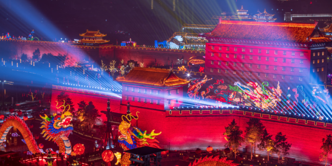

Our country has a long history of Chinese New Year. In the process of inheritance and development, some relatively fixed customs have been formed, and many of them are still passed down, such as buying New Year's goods, sweeping the dust, stick couplets, eating New Year's Eve dinner, stay up all the night in the New Year's Eve, visiting and greetings, watching dragon and lion dance, Blessing and ancestors worshiping, warding off disasters, escorting boats, temple fairs etc. Traditional festival ceremonies and relative customs activities consist important part of Spring Festival, it carries with a rich and colorful cultural heritage of festivals.
| Lion Dance | Cuplet |
| Festival Lantern | Lion Dance |
|  |